プラズマ実験のページの図4-3に示したようにプラズマ計測には種々の計測がありこれらを駆使してプラズマの詳細な物理的性質を明らかにしていきます。これらの計測手法の中で我々の研究室では干渉計測とトムソン散乱計測を開発しています。どちらの計測手法もレーザーやマイクロ波ソースといった、電磁波を放出する光源を用います。このように外部から電磁波または粒子ビームを入射して計測する手法を能動計測、プラズマからの発光や放射を計測する手法を受動計測といいます。能動計測は電磁波光源や粒子ビームを級力にすることにより計測の信号強度を大きくすることができますが、受動計測の信号強度はプラズマの状態で決まります。ただし、能動計測は検出器のほかに光源や粒子ビームを準備する必要があり、受動計測に比べて計測の立ち上げの苦労が2倍になります。また、能動計測は光源や粒子ビームの発展に伴い開発が進展しました。
5-1. 干渉計測
干渉計はプラズマ計測でなく多くの物理計測で使われています。歴史的に有名なのはマイケルソンモーリーの実験による光の速度が一定であることの検証、最近では重力波の検出にも用いられました。いずれも微小な位置の変化を計測しました。干渉計は光の重ね合わせ(干渉)を用いた計測手法です。同じ光の強さであれば波の山と山が重なれば、光は強め合い、山と谷が重なれば波は打ち消しあいます。
干渉計測は光を用いれば計測できますが、皆さんが普段の生活で使っている電灯では干渉計測は容易ではありません。図5-1に電灯の光とレーザー光の比較を示します。図5-1の横軸は空間軸でも時間軸でも構いません。電灯の光はいろんな波長を持ち、空間的、時間的に波が途切れた状態、すなわち、少しだけ距離が離れる、または時間がたつと元の波とは全く関係がなくなる状態となります。この空間的、時間的関係を維持できないことを空間的時間的に無相関(インコヒーレント incoherent)と呼びます。一方、レーザー光は単一の波長でしかも時間的、空間的に位相関係が保たれるため、干渉計測が容易です。空間的、時間的に相関関係が保たれている状態をコヒーレントな状態と呼び、そうでない状態をインコヒーレントな状態と呼びます。厳密にいうとレーザーでもいろんな種類があり、相関長、相関時間が長くするにはレーザーを安定化する制御が必要です。干渉計測に用いないレーザー、例えば、レーザーポインターに使われている半導体レーザーは相関長、相関時間は長くはありません。
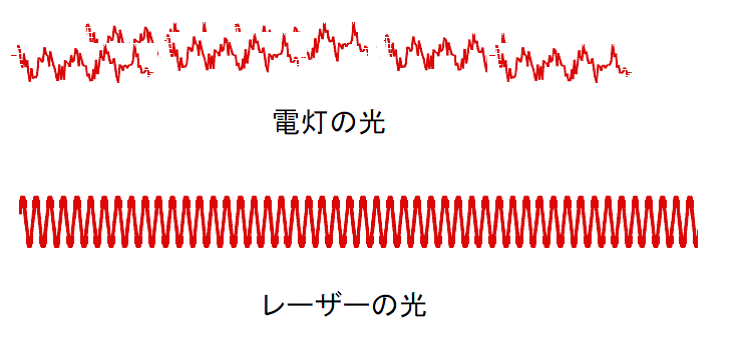
それでは図5-2を用いて干渉計の計測を説明します。図5-2(a)に示すように図の左から光を入射します。光はHalf mirror(ハーフミラー)と呼ばれる半分反射して半分透過するミラーで分割されます。反射した光はMirror1の方へ進み、透過した光はMirror2の方へ進みます。Mirror1, Mirror2で反射した光はHalf mirrorに戻りここで二つの光が混合します。混合した光の半分はDetector(検出器)へ進みます。
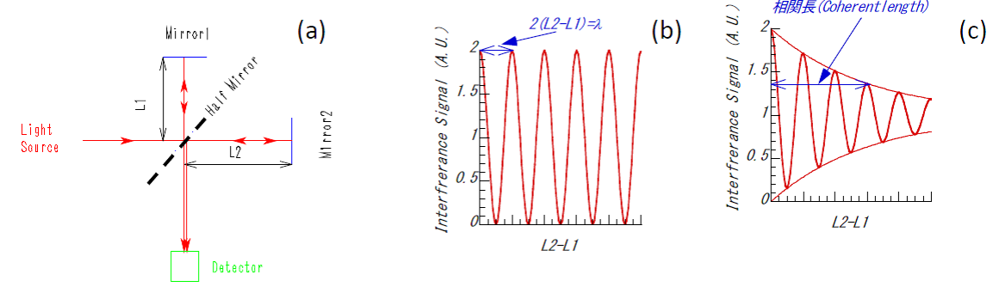
ここで、Mirror1またはMirror2を動かしてハーフミラーからそれぞれのミラーまでの距離L1またはL2を変えます。このときL1とL2の距離の差の2倍が光源の波長の整数倍になっていると光は強めあい、1/2波長の奇数倍になっているとき光は打ち消しあいます。距離の差の2倍を考えるのは(a)に示す干渉計では光がハーフミラーとミラーの間で往復するのでミラーを動かした距離の2倍を光が伝播することになるからです。コヒーレントなレーザーを用いるとミラーの位置を動かすに連れて図5-2(b)のように干渉信号が変化します。しかし、電灯のようなインコヒーレントな光源を用いると光源の波長程度の距離の差では干渉信号が得られますが、距離の差が大きくなると図5-2(c)のように干渉信号が弱くなってしまいます。1960年代にレーザーが登場するまでは電灯や原子からの発光線で干渉計を行っていたのですが、その場合は二つのパス(ハーフミラーからミラーまでの距離)を厳密にあわせることが必要でした。
ではプラズマ実験において干渉計で何が計測できるのでしょうか?答えは電子密度です。“核融合とは”のページや“プラズマ実験”の頁でお話したように核融合反応を起こすのはあくまで水素イオンですが、水素イオンの密度を直接計測するのは困難なので多くの実験では密度の指標、言い換えればプラズマがどのくらい濃いかの指標として単位体積(通常1cm3か1m3)あたりの電子密度を用います。プラズマ計測というのは電圧や電流や抵抗をテスター計測するのと異なり、多くの計測手法では計測したい量が直接計測でできるものはあまりありません。たとえば、プラズマからの発光はその色(波長)や強度がプラズマの電子温度、電子密度、イオン温度、燃料ガスの密度なので決まり、発光からこれらを区別して評価することは容易ではありません。しかし、干渉計はその点計測した量が光源の波長がわかればプラズマ中の電子密度のみで決まるというところに大きな利点があります。
さて電子密度をどのようにして計測するのでしょうか?それにはプラズマ中で光の波長が電子密度に比例して変化するという性質を利用します。図5-4にプラズマに光(電磁波)を入射した時の電磁波の変化を示します。プラズマがない時にくらべてプラズマがある場合、電磁波の波長は長くなります。これはプラズマが存在している空間の長さが短くなると同じ事です。この実効的な空間長の長さは電子密度が高くなるとそれに比例して短くなります。よって、プラズマが図5-4のように干渉計の光が透過するところに存在すると実効的にミラーを移動させたのと同じ効果が起きるのです。
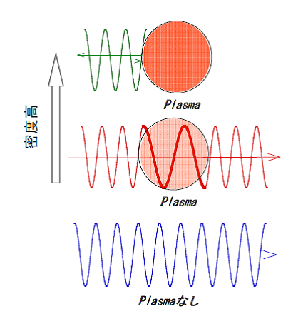
干渉は二つの光の光路(光源から検出器まで光が伝搬した距離)の差(光路)を計測します。光路差の差が波長の整数倍のときに強め合い、1/2波長の奇数倍のとき打ち消しあうということは光の二つの光路差での位相差が2πnのとき強め合い、π/2(n+1) (いずれもn=0,1,2,…)のとき打ち消しあうということになります。当然、それ以外の場合、強め合いと打ち消しあいの双方の効果もあるわけで、そのような場合も含めたときの位相差が以下の式で与えられます。この式の導出は参考文献12をご参照ください。
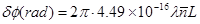
(5-1)ここでλはレーザーの波長で単位はm、
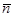
はプラズマ中での平均電子密度で単位はm-3、Lはプラズマの長さで単位はmです。電子密度がさらに高くなると波長は無限大になり、このとき電磁波は反射されます。ちなみに、地球の上空には電離層と呼ばれるプラズマの層が存在し、50MHz程度までは電離層で反射されます。いまは海を越えた外国との通信は光ケーブルや衛星を経由した通信ですが、50年以上前は電離層で電磁波が反射されることを用いた無線通信が行われていました。
図5-4はマイケルソン型の干渉計と呼ばれ、そのほかにもレーザー光を分割した後二つに分けて干渉させる図5-5のようなマハツエンダー型の干渉計もあります。マイケルソン型のほうが使うミラーの数が少なく、光がプラズマを往復するので電子密度による変化を2倍にして計測することができます。ただ、マイケルソン型の場合、レーザーにミラーからの反射光が戻ってしまいレーザーの発振が不安定になることがあります。
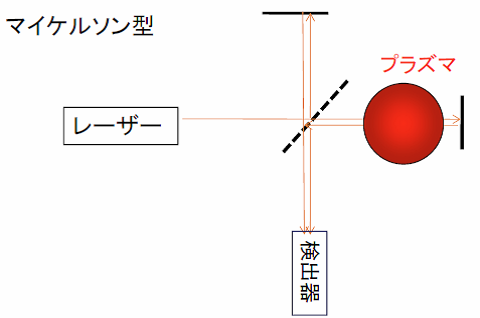
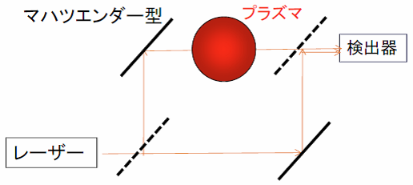
では次に干渉計の信号処理について少し詳しくお話ししましょう。図5-6に干渉計でどのような信号を観測できるのかを示しています。“プラズマ実験”のページでお話ししたようにプラズマ実験ではプラズマを点火したのちに燃料ガスを供給し密度を上げていきます。燃料ガスを調整することにより密度を一定に保ち、最後に密度を下げていきます。模式図で示すと密度の時間変化は図5-6(b)のようになります。プラズマが添加すると図5-6(a)に示すようにプラズマが存在する光路(測定光路;probe path)ではプラズマ中で波長が長くなるため、プラズマが存在しない光路(参照行路;reference path)との間に位相変化が生じます。このとき、干渉信号がどのように変化するかを図5-6(c)に示します。密度の立ち上がりと密度の減少時間区間では位相差が時間的に変化する(これは図5-2でミラーを動かすことに対応します。)するので強め合い、弱めあいの信号が現れますが、密度が一定になると信号も一定になります。その後密度が減少すると再び強め合い、弱めあいの信号が現れます。干渉信号を数式を用いて説明すると式(5-2)のようになります。ここでプラズマを通過するprobe pathの光の振幅を
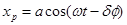
、プラズマを通過しないreference pathの光の振幅をとします。ここで、aはprobe pathの光の振幅、bはreference pathの光の振幅、ωはレーザーの周波数、tは時間、δφはプラズマによる位相変化を示します。光の検出器は光のエネルギーに応じて電流または電圧が変化します。エネルギーは振幅の二乗なので結局、probe pathとreference pathの振幅を足し合わせた振幅の二乗(xr+xp)2が検出器の出力として現れます。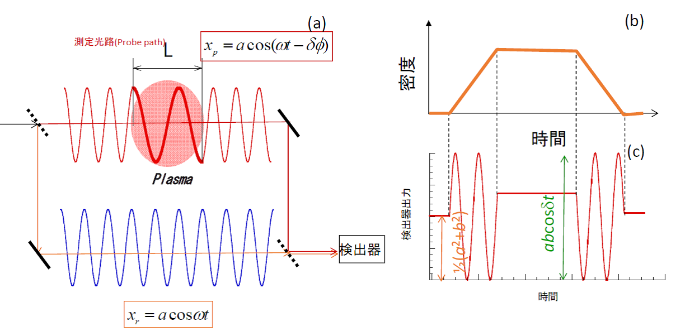
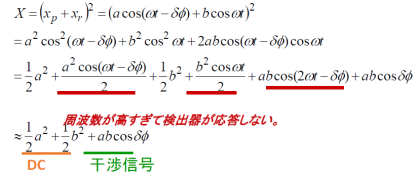
(5-2)式で注意していただきたいのはωtや2ωtがかかる項は周波数が高すぎて検出器が応答しないため信号に寄与しないということです。(5-2)式に示すように干渉信号がcosine信号になっているのがわかります。図5-6のような検出をホモダイン検出と呼びます。式(5-2)の干渉信号の項のδφが式(5-1)で示されます。式(5-1)は確かに電子密度(正確にはプラズマ中で積分した電子密度)の関数なのですが、cosin信号から位相がどれだけ変化したのかを正確に評価することは容易ではありません。特に干渉信号が強め合い、弱めあいの一山以下の精度が必要な場合、即ち位相変化が2π以下の場合、信号は位相変化に対して必ずしも直線的に変化するわけではないので位相変化を正確に計測することが困難になります。
そこで、2π以下の位相変化を精度良く計測する手法としてヘテロダイン検出という手法を干渉計測では用いています。図5-7にヘテロダイン検出のシステムと信号出力を示します。図5-7(a)は図5-6(a)よりも随分と複雑になっています。この検出手法の特徴は周波数シフターでレーザーの周波数をわずかにシフトすることです。わずかに異なる周波数を一緒に検出(混ぜ合わせる;ミキシングと呼びます)することによりシフトした周波数をうねりの周波数として検出に用います。ヘテロダイン検波では二つの検出器が必要になります。一つはプラズマを通過した光とミキシングして得たうねり信号で、もう一つはプラズマを通過しない光とミキシングしたうねり信号です。どのような信号が取得されるかは式(5-3),(5-4)を参照してください。式(5-3),(5-4)でもωtや2ωtがかかる項は周波数が高すぎて検出器が応答しないため信号に寄与しないことに注意してください。うねり信号の周波数は検出器が応答する周波数に設定され、プラズマ計測では10kHz〜50MHz程度のものが用いられます。周波数をシフするのにはいくつかの手法があり、周波数がわずかに異なる二つのレーザーを用いる手法、屈折率の大きい媒質に圧電素子で音波を励起し、媒質中の音波と光の相互作用(音響光学効果)を用いるもの、特定の波長のみを反射する回折格子とよばれる光学素子を円盤状に作り、その円盤を回転させて光を回転する円盤で反射する回転回折格子の手法などがあります。
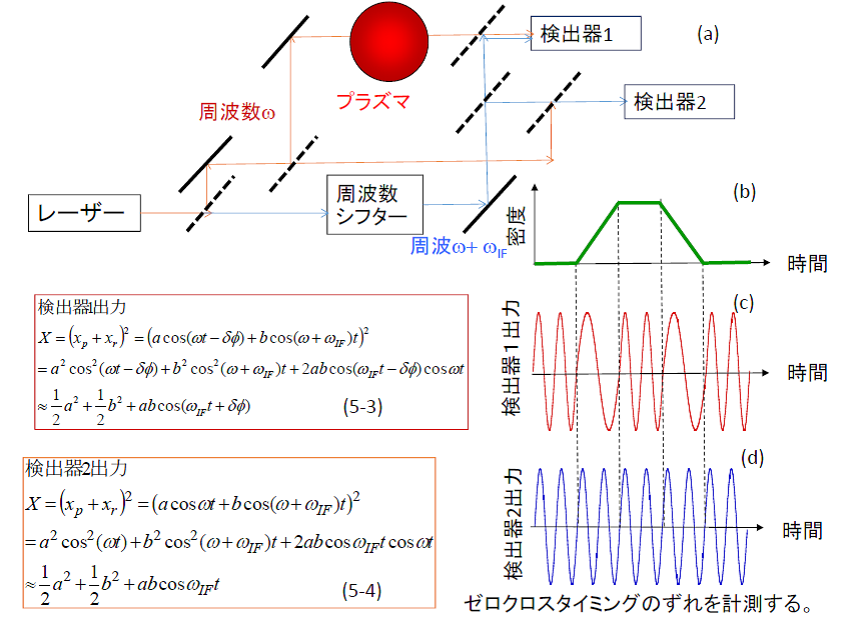
プラズマがない光路を伝搬する光とミキシングして得たうねり信号は図5-7(d)のような信号が得られますが、プラズマを通過する光とミキシングして得たうねり信号は(5-1)式を位相に含む(5-3)式となります。検出器1では図5-7(c)が、検出器2では図5-7(d)が検出されます。図5-7(c)と(d)を比較すると(c)には位相変化の項が含まれるため、信号がゼロとなるタイミングが(c)と(d)では異なり、それを計測することにより位相変化を計測することができます。ゼロクロスのタイミングの違いは位相変化に比例して変化するため位相変化を精度良く計測できます。
LHDではヘテロダイン検波を用いた干渉計が3台設置されています。一つは波長1mmのマイクロ波光源を用いた干渉計で電子密度のモニターに使われています。2番目のヘテロダイン干渉計は波長119µmの遠赤外線レーザーを用いた干渉計で電子密度分布の計測に用いられています。3番目のヘテロダイン干渉計は波長10.6µmの炭酸ガスレーザーを用いた干渉計でこれは遠赤外線レーザー干渉計で計測ができない高密度用の干渉計です。
図5-8(a)がLHDにおける13チャンネルの遠赤外線レーザー干渉計です。干渉計は大型ヘリカル装置の頁の図3-4に示しているようにドーナッツ型のLHDの真空容器を挟み込むように設置されています。レーザーはLHD本体室の隣の計測機器室より伝送されその後、空気ばね上に設置された光学架台で14本のビームに分岐されそのうち13本は真空容器に入射され、1本は真空容器に入射されずに参照ビームとなります。干渉計を空気ばねの上に設置しているのは、実験室は真空ポンプなどの振動がノイズ源となるためこれを除去するためです。
システムの概念図を図5-8(b)に示します。真空容器中に入射されたレーザー光はプラズマを突き抜けた後にミラーで反射されプラズマを往復するマイケルソン型の干渉計になっています。光源であるレーザーは炭酸ガスレーザーをアルコール蒸気で満たした二本のガラス管に入射して発振周波数が1MHzずらしたヘテロダイン検波用のうねり信号を生成します。二本のレーザー管を用いるので双子型レーザーと呼ばれています。図5-9にレーザーのシステムを示します。このレーザーは中部大学の岡島教授(現 名誉教授)と核融合研の川端教授(現 名誉教授)のグループで共同開発されてきました。
図5-10に遠赤外線レーザー干渉計で計測した電子密度の時間変化を示します。0.45secで急速に密度が上昇していますが、これはペレットという水素の氷を入射して密度を急激に増加させたためです。ところで、干渉計はプラズマ中の電子密度のレーザーの光路に線積分値になることに注意が必要です。プラズマの断面は図5-8(a)の真空容器の中心に示すような入れ子上の構造となっています。この入れ子を磁気面と呼びますが電子密度をはじめ多くの物理量は磁気面上で一定であるため、線積分した電子密度から磁気面上の電子密度を求めるためにはアーベル変換と呼ばれる計算手法が必要です。アーベル変換を用いて計測した電子密度の空間分布の時間変化を図5-10(b)に示します。プラズマの放電前半では中心部がへこむ電子密度分布となりますが、ペレット入射後には中心の密度が高くなる凸型の分布になります。このような電子密度の変化から電子の閉じ込めの性質を明らかにすることができます。興味のある方は“講義および講演資料”の頁から“プラズマ夏の学校_磁場閉じ込めプラズマの粒子輸送.pdf”をダウンロードしてご参照ください。
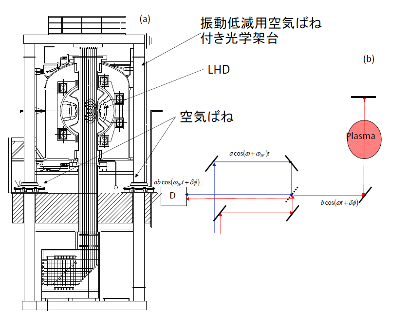
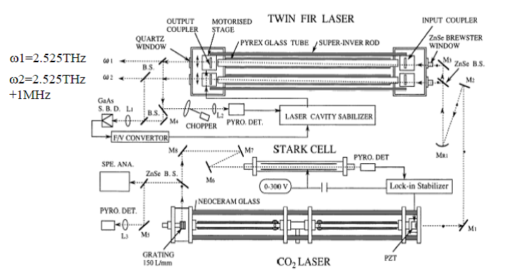
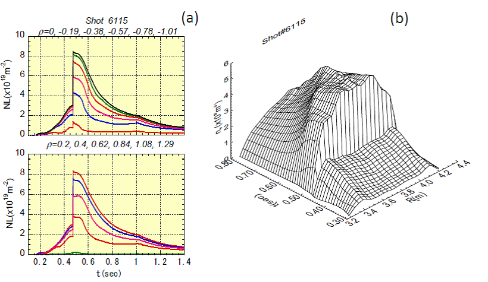
5-2. トムソン散乱計測
トムソン散乱計測は磁場閉じ込めプラズマで最も幅広く使われ、最もプラズマの物理解析に貢献している計測でしょう。電磁波の散乱現象には大きく分けて中性粒子との散乱減現象とプラズマとの散乱現象が有り前者にはミー散乱、レーリー散乱があります。ミー散乱は電磁波の波長よりも長い中性粒子との散乱現象で太陽光と雲(水蒸気)の散乱現象、ヘッドライトと霧(水蒸気)との散乱現象があります。太陽光は多くの波長を含んでいるのですが雲が白いのはすべての波長は同じように散乱されるからです。また、レーリー散乱は太陽光と大気中の酸素分子や窒素分子との散乱が例としてあります。レーリー散乱は波長が短いほど強く性質されるがあります。昼間空が青くて朝と夕方空が赤くなるのはレーリー散乱の波長依存性によります。青い光のほうが赤い光よりも波長は短いのです。よって空は青いのです。ではどうして朝と夕方は空が赤いのでしょうか?これは、昼間は太陽光が真上から入射するのに対して、朝と夕方は太陽光が地表すれすれの角度から入射するため、大気中で非常に長い距離を太陽光が伝播することになります。よって、青い光がどんどん散乱されて減っていきその結果赤い光が残るためです。時々つきが赤いのも同じ理屈で月が地平背印に近いところにあるときは赤くなります。
一方、トムソン散乱は電磁波とプラズマ中との散乱現象なので通常の生活ではお目にかかることがないので少々わかりにくいかもしれません。ここでは原理を簡単に説明しますが、詳しい理屈は、参考文献7,8,9,15を参照してください。
ミー散乱やレーリー散乱は太陽光やヘッドライトというエネルギー密度が高くなく、指向性も鋭くない光でも観測することができますが、トムソン散乱計測には強い強度を持つレーザー光が必要です。トムソン散乱には二つの種類があり、非協同トムソン散乱(incoherent Thomson scattering)と協同トムソン散乱(collective Thomson scattering)の二種類があります。非協同トムソン散乱は電子密度、電子温度を計測し、協同トムソン散乱はイオン温度、イオン密度、プラズマ中の波動を計測します。通常、トムソン散乱とこの業界の人たちが言っているときはほとんどの場合非協同トムソン散乱のことを指しています。これは、非協同トムソン散乱は多くのプラズマ実験装置で用いられているのに比べて、イオン温度、イオン密度を計測するための協同トムソン散乱は非常に適用例が少ないためです。
図5-11に非協同トムソン散乱と協同トムソン散乱の原理の比較を示します。
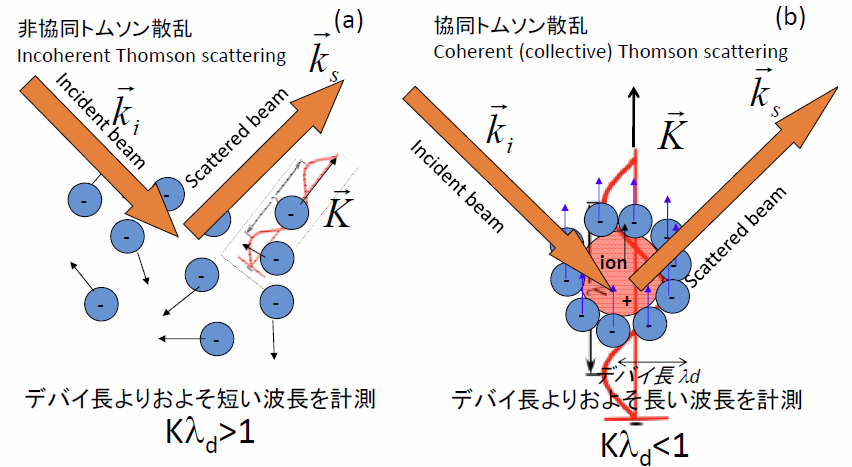
図5-11(a),(b)で青は電子、赤はイオンです。図5-11(a)に示すように電子は熱運動でランダムに動き回っています。イオンも熱運動で動き回っていますがイオン1個の運動に注目してみると、図5-11(b)に注目してみるとプラズマは電気的に中性になろうという性質があるのでイオンの周りには電子がまとわりつきイオンの正電荷を遮蔽します。よって、イオンが動くと電子もつられてグループとして集団的に運動します。電子は非常に細かいスケールで見るとランダムに動き回っていますが、もう少し、大きなスケールで見るとイオンのランダムの動きに追随して集団的に運動しています。電磁波が散乱されるのはあくまでイオンでなく電子であるため(簡単には一番軽い軽水素イオンですら電子より1800倍重いので電磁波の影響は電子に比べてはるかに小さい。)、小さいスケールの運動による散乱現象からは電子の温度、密度がわかり、もう少し大きなスケールの運動からはイオンの温度密度がわかります。図5-12をご覧ください。静かな湖で白鳥がすいすいと泳いでいるとします。白鳥は青線で示すように水面にさざ波を立てますが、白鳥が見えないとしても、さざ波を見ることにより白鳥の動きを知ることができます。協同トムソン散乱は計測の目的はイオンの熱運動なのですが、電子の集団的な動きを介してイオンの熱運動を計測するのです。
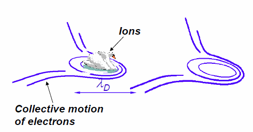
(図はデンマーク工科大学 Søren Korsholm博士のご好意による。)
ところで、collectiveとは集団的というのが直訳ですが、日本のレーザー計測の先駆者の先生は集団トムソン散乱と訳さずに協同トムソン散乱と訳されました。“協同”とは複数の比世や団体が力を合わせて物事を行うこと(用例;農業協同組合)で、collectiveを協同と訳されました。一方、協同的でない電子の運動については非協同と訳されました。英語ではcollectiveの反対語としてincoherent(無相関)という言葉を持ってきたのですが、無相関トムソン散乱というのも聞こえが悪いので先駆者の先生は非協同トムソン散乱と和訳されました。私はこれらの和訳は正岡子規がbaseballを塁球と直訳せずに野球と意訳したようなセンスの良さを感じます。
図5-13に非協同トムソン散乱のシステムの概略を示します。レーザーには非常に強力なレーザーを入射します。現在最もよく用いられているのはパルス発振のYAGレーザーです。レーザーにはレーザーポインターのように連続的に発振するものと、非常に短い時間のみ発振するパルスレーザーがあります。パルスレーザーは一般に強力なエネルギーが必要な場合に使われます。現在用いられているパルス発振のYAGレーザーは1秒間に30-100回程度のパルスを発振することができます。レーザーが強力なためレーザーが熱で熱くなり冷却が必要なためにパルス間隔が制限されています。図5-13に示すようにレーザーパルスをプラズマに入射します。入射したレーザー光は図5-11(a)に示すように熱運動している電子に散乱されます。入射する前は単一の波長を持つのですが、電子の熱運動により波長が広がります。温度が高いほど波長は広く広がりこの広がりから電子温度を計測することができます。また、光の強度は電子密度に比例するので光の強度から電子密度を計測することができます。ただし、散乱光強度はレーザーのパワーの揺らぎ、光軸のゆれ、検出器の感度の変化によっても変わるため、電子密度の絶対値を決める場合は較正実験が必要になります。較正実験はプラズマのかわりに窒素ガスを詰めて窒素ガスのレーリー散乱から行います。ただ、較正実験も技術的に容易ではなく較正実験がうまくできないときは計測した分布は正しいとして、それを積分した絶対値が干渉計で計測した積分線密度と一致するように絶対値を決めることがあります。
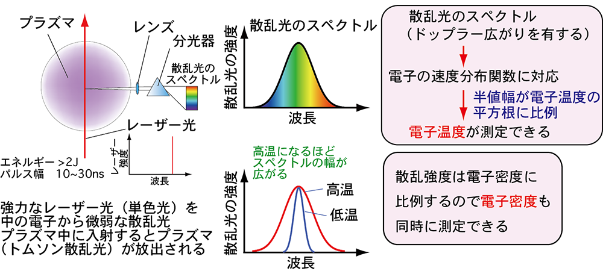
(図は量子科学技術研究開発機構 波多江仰紀博士のご好意による。)
図5-14に1969年にロシアのトカマクで用いられた非協同トムソン散乱のシステムを示します。これは大型ヘリカル装置の頁の表2-1に示した旧ソ連で1968年に画期的な結果を出したT-10トカマク装置におけるトムソン散乱計測のシステムと計測結果です。
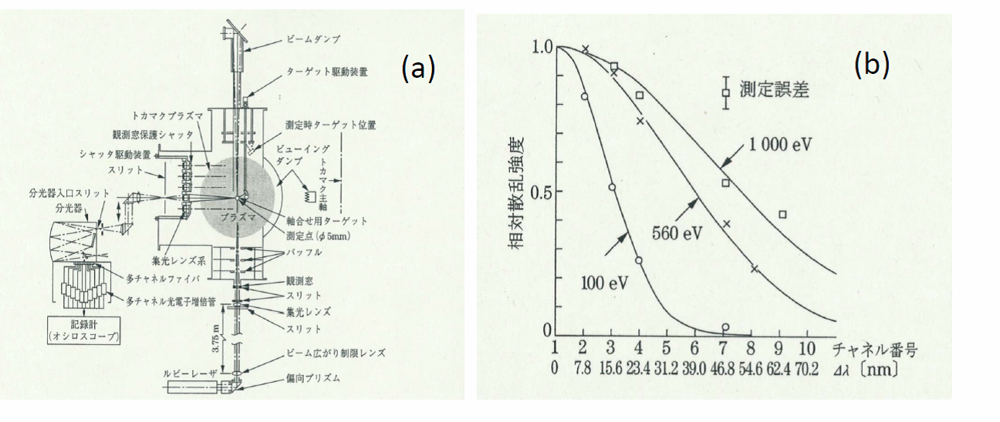
(b) ○ プラズマ電流40kA、× プラズマ電流60kA、□ プラズマ電流85kA [2]
当時は30-100Hzでパルス発振するYAGレーザーは未だ開発されていなかったためルビーレーザーが用いられました。ルビーレーザーは20年程度前までは非協同トムソン散乱の光源に用いられていました。発振パワーが強力なのですが、冷却が大変で1秒間に1パルス程度しか発振できません。このシステムは英国のカラム研究所が開発したのですが、カラム研究所の研究者がロシアのクルチャトフ研究所にシステムを持ち込んで計測しました。図5-14(b)に示すようにプラズマ電流を大きくするにつれてスペクトルが広がっていることがわかります。1000eVというのは核融合を起こすのに必要な温度の1/10ですが、立派な達成値です。現在のプラズマ実験(特に中型、小型装置)でも1000eV程度のプラズマで多くの実験がされています。この計測結果により他のタイプの閉じ込め装置よりトカマクが高い温度を達成できることが確認され、世界中の研究所は雪崩を打ったようにトカマクの研究に取り組むようになりました。一つの計測結果が核融合の歴史を変えたということで画期的な計測結果です。
図5-15に現在稼動しているLHDにおけるYAGトムソンを用いた非協同トムソン散乱計測を示します。このシステムは電子温度、電子密度を空間200点で計測します。T-10のシステムは90度方向に散乱した光を計測しますがLHDのシステムは90度方向の散乱光はヘリカルコイルにより計測できないため後方に散乱する散乱光を計測します。T-10のシステムでは散乱光をミラーで伝送しますがLHDのシステムは光ファイバーで伝送します。現在4台の50Hzのレーザーと3台の10Hzのレーザーを組み合わせて最大100Hzで計測することができます。レーザーの組み合わせの間隔を調整することにより限られた時間になりますが、1msec以下の時間分解で計測することも可能です。この装置は1998年にLHDが実験を開始してから現在まで問題なく稼動しています。
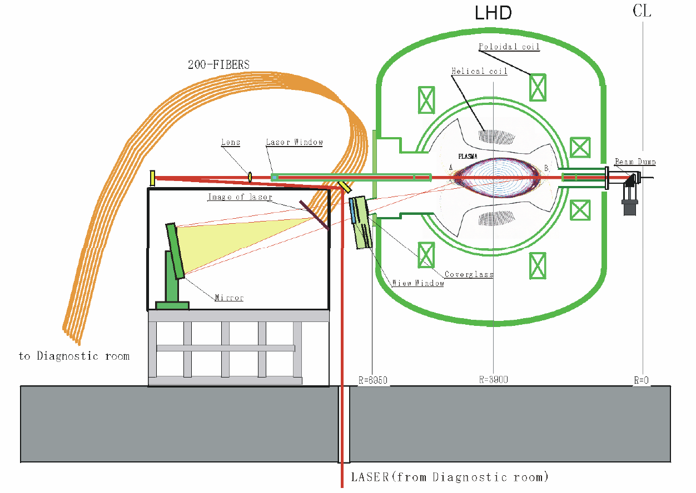
図5-16に計測例を示します。LHDのYAGトムソンが稼動するまでは、ほとんどの非協同トムソン散乱装置の計測点は10-20程度でした。ルビーレーザーとCCDカメラを用いた手法では100点以上に計測点を取得できましたがルビーレーザーは繰り返し周波数が低いため時間変化を取得することができませんでした。その点、LHDのシステムは時間変化がわかり、なおかつ詳細な分布を計測できたということで画期的でした。図5-16に示すように電子温度分布は必ずしもスムースな構造を持つわけでなく(a)に示すように平坦化したり(b)に示すようにあるところで急に電子温度の勾配が強くなることがわかりました。
協同トムソン散乱のシステムについては研究紹介のページでお話します。それでは、今までお話した知識を元に我々の研究室で取り組んでいる研究についてお話します。トップ頁より研究紹介のページに進んでください。
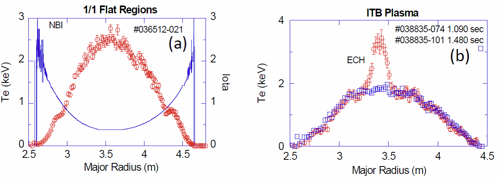
赤丸:電子温度、青四角:電子密度、青実線:回転変換
(図は核融合科学研究所 山田一博博士のご好意による。)
参考文献
- F.F. Chen, 内田岱二郎訳「プラズマ物理入門」、丸善 (1977)
- K. Kawahata, K. Tanaka, Y. Ito, A. Ejiri, and S. Okajima, “Far infrared laser interferometer system on the Large Helical Device”, Review of Scientific Instruments, Vol. 70 (1999), pp.707-709
- Kenji TANAKA, Kazuo KAWAHATA, Tokihiko TOKUZAWA, Shigeki OKAJIMA, Yasuhiko ITO, Katsunori MURAOKA, Ryuichi SAKAMOTO, Kiyomasa WATANABE, Tomohiro MORISAKI, Hiroshi YAMADA and the LHD Experimental group, “Density Reconstruction Using a Multi-Channel Far-Infrared Laser Interferometer and Particle Transport Study of a Pellet-Injected Plasma on the LHD”, Plasma and Fusion Research, Vol. 3 (2008) pp. 050-1-050-15
- Dustin H. Froula, Siegfried Glenger, Neville C. Luhmann Jr., John Sheffield, “Plasma Scattering of Electromagnetic Radiation Theory and Measurement Technique 2nd Edition”, ELSEVIER, Academic Press
- I. YAMADA, K. NARIHARA, H. FUNABA, T. MINAMI, H. HAYASHI, T. KOHMOTO, “RECENT PROGRESS OF THE LHD THOMSON SCATTERING SYSTEM”, FUSION SCIENCE AND TECHNOLOGY, Vol. 58, JULY/AUG. (2010), 345